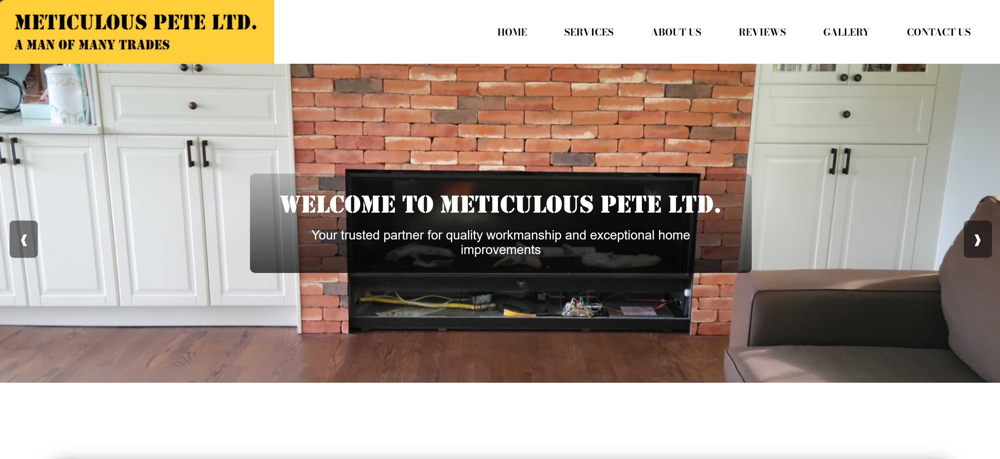
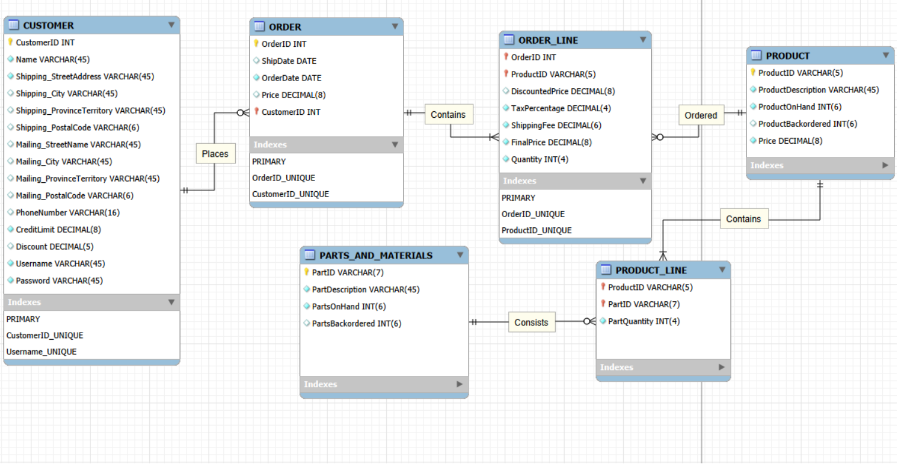
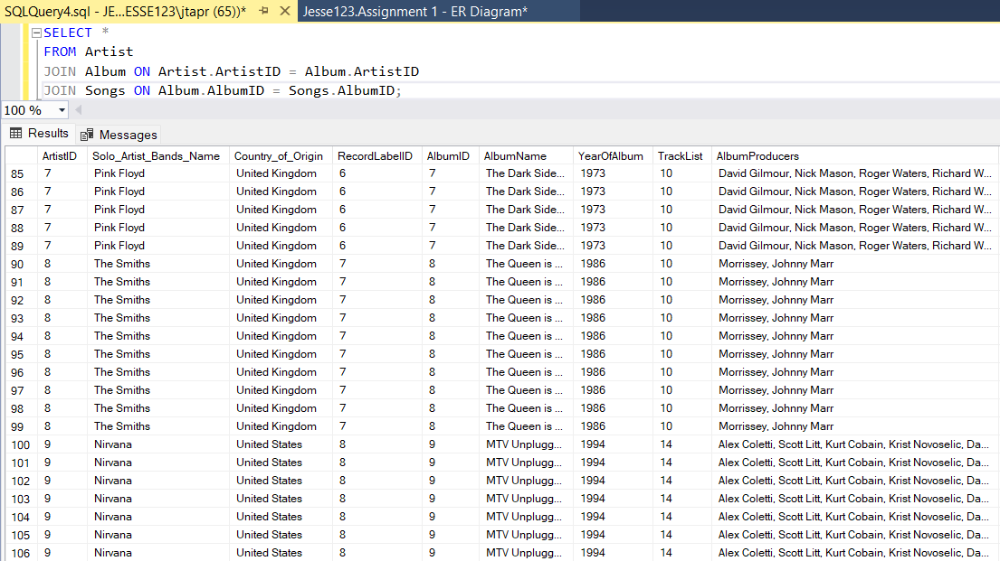

I'm an aspiring web developer who enjoys building things from scratch, like this Windows XP-style portfolio made with HTML, CSS, and JavaScript. I'm currently learning React, TypeScript, and REST APIs, and I'm looking for my first web development role.
I got into coding because of my love for building, creating and being artistic with my projects that I do. Making sure the end result is perfect for anyone who has access to the project.
Aspiring Web Developer | Ottawa, Canada
Computer Programming diploma graduate from Algonquin College with hands-on experience building responsive, cross-browser web applications using HTML5, CSS3, and JavaScript, working with SQL and NoSQL databases, and converting UI/UX designs into clean, well-documented code. Freelance experience managing a project from client discovery through deployment and ongoing maintenance. Developing familiarity with React, REST APIs, and JSON.
Computer Programming Diploma | 2024 – 2026
Algonquin College of Applied Arts and Technology, Ottawa, ON
Radio Broadcasting Diploma | 2015 – 2017
Algonquin College of Applied Arts and Technology, Ottawa, ON
Web Development: HTML5, CSS3, JavaScript, TypeScript, React, REST APIs & JSON, Node.js, npm, PHP
Programming Languages: JavaScript, Python, Java, PHP, SQL, PL/SQL, COBOL, Dart, Cypher
Databases: SQL Server, PostgreSQL, MySQL, Oracle, Microsoft Access, MongoDB (NoSQL), Neo4j
Version Control & Workflow: Git, GitHub
Operating Systems: Windows 11, Linux (Ubuntu, Manjaro)
IDE / Tools: VS Code, Postman, Visual Studio, Eclipse, NetBeans, PyCharm, Android Studio, XAMPP, VMware Workstation, SQL Workbench, pgAdmin4, MongoDB Compass, Microsoft SQL Server Management Studio
Testing & AI Tools: JUnit, Jest, Claude.AI
Dining Room Supervisor | 2022 - Present
Orchard Walk Retirement Home, Manotick, ON
A Letter of Recommendation from Jason Mombourquette, one of my professors.
Download Letter of Recommendation
Acting as the primary point of contact for the client to define business goals, project scope, and user requirements. Designing a custom website architecture focused on the client's specific target audience to improve digital presence and brand engagement. Managing the full project lifecycle from initial wireframes and discovery calls to deployment and testing. Developing a responsive front-end using HTML, CSS, JavaScript ensuring browser and mobile capability.
Website Link: https://www.meticulouspete.com/

A personal front-end project built to practice HTML, CSS, and JavaScript, designing a fictional luxury fashion e-commerce site in the style of heritage houses like Chanel and Gucci. So far, I've built the home page, focused on clean typography, a refined color palette, and a layout meant to reflect classic, old-money elegance. Next planned steps include shopping pages where users can browse and filter products. The project isn't live and is hosted on GitHub as an ongoing space to practice front-end design and development.
GitHub Repo Link: https://github.com/prou0212/XYZ-Manufacturing-Company

As part of a team of 3, The team designed a relational database for a manufacturing company's customer order and product application. Starting from a set of business requirements, I helped identify entities, business rules, and candidate keys, then built conceptual and physical entity-relationship diagrams, normalizing the design and resolving many-to-many relationships between customers, orders, products, and parts. The team wrote the DDL scripts to create the tables, keys, and constraints, populated the database with test data, and authored a series of SQL queries covering joins, aggregates, GROUP BY/HAVING, and subqueries, along with dynamic and materialized views.
GitHub Repo Link: https://github.com/prou0212/XYZ-Manufacturing-Company

As part of a team of 3, I helped design and build a database application for managing a vinyl record collection, tracking artists, albums, songs, genres, and record labels. The system uses Microsoft SQL Server as the backend, connected through SSMS, with Microsoft Access as the frontend, providing forms for adding, editing, and searching records, along with built-in reports for albums by artist, albums by genre, and songs by album. I worked on modeling the database relationships, including many-to-many links between artists, albums, songs, and producers, and helped build out the Access forms, search functionality, and backup/restore process for the SQL Server database.
GitHub Repo Link: https://github.com/prou0212/Record-Collection

As part of a cross-functional team of 3, including designers, I helped build a responsive full-stack web application using HTML, CSS, JavaScript, and PHP. I converted UI/UX designs into clean, functional front-end code, and designed and implemented a user authentication system that enabled personalized experiences and saved preferences for each user. Throughout the project, I took part in team code reviews and used Git/GitHub for version control, helping maintain a clean, collaborative commit history.
GitHub Repo Link: https://github.com/prou0212/Web-Assignment-2

Covered core software testing techniques, including equivalence partitioning, boundary value analysis, decision table testing, and state transition testing, learning how to apply each method to design effective test cases that catch defects with fewer, more targeted tests.

Covered how to write and prioritize user stories, including acceptance criteria and story sizing, as a way to capture requirements from the user's perspective and guide iterative development.

Covered day-to-day Agile practices such as sprint planning, daily stand-ups, iterative delivery, and retrospectives, and how these practices help teams adapt quickly and deliver value continuously.

Covered how to structure and support an effective Agile team, including team roles, communication practices, and fostering the collaboration and trust needed for a team to self-organize.

Covered the core principles and values behind Agile methodologies, including iterative development, adaptive planning, and cross-functional collaboration, as an introduction to how Agile teams plan and deliver work.

Covered writing clean, maintainable code within an Agile workflow, including naming conventions, function design, refactoring, and code smells, with an emphasis on code that's easy for a team to read and extend.

Covered how testing fits into each phase of the software development lifecycle, from requirements and design through implementation, testing, and deployment, and the value of testing early rather than treating it as a final step.

Covered common software architecture patterns, including layered, event-driven, microkernel, and microservices architectures, along with the trade-offs of each and how to choose the right pattern for a given system's requirements.